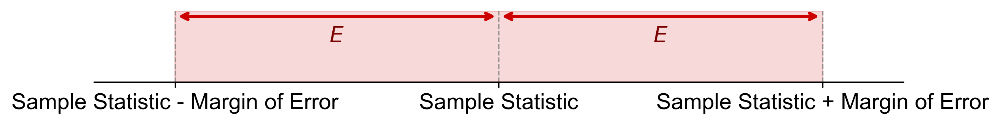

In statistical inference, we use sample data to estimate population parameters. This process involves point estimates, confidence intervals, and confidence levels. Let’s explore these concepts in depth.
In statistical inference, sample data enables us to make estimates about population parameters, with point estimates serving as a primary tool in this process.
Definition - Point Estimate
A point estimate is a single value derived from sample data that represents the best approximation of a population parameter. It provides a succinct summary of the sample and serves as a “best guess” for the corresponding population characteristic.
To further clarify the concept of point estimates, consider the following examples:
Scenario: A basketball coach seeks to estimate the scoring accuracy of their team.
Population parameter: The true proportion (\(p\)) of successful scoring attempts across the entire season for all team players.
Sample: The coach observes 100 scoring attempts during a practice session.
Point estimate: With 65 successful attempts out of 100, the point estimate (\(\widehat{p}\)) is 0.65, or 65%.
Interpretation: Based on this sample, the coach’s best estimate of the team’s overall scoring accuracy is 65%. This value serves as a point estimate for the true (but unknown) proportion of successful scoring attempts.
Example 6.2 (Urban Apartment Rent)
Scenario: A real estate analyst aims to estimate the average rent for two-bedroom apartments in a city.
Population parameter: The true average rent (\(\mu\)) for all two-bedroom apartments in the city.
Sample: The analyst collects rent data from 50 apartments listed in local newspapers.
Point estimate: If the sample average rent (\(\bar{x}\)) is $1177.45, this value becomes the point estimate for the population mean.
Interpretation: Based on the sample of 50 apartments, the analyst’s best estimate of the average rent for all two-bedroom apartments in the city is $1177.45. This value serves as a point estimate for the true (but unknown) population mean rent.
A Confidence Interval is a range of values within which the true population parameter is likely to fall. It provides an indication of the precision of an estimate.
Example 6.3 (Confidence Interval for Basketball Scoring)
In Example 6.1, assume we calculate a 95% confidence interval for basketball scoring accuracy:
This suggests that we are 95% confident that the true average rent for two-bedroom apartments in the city is between $1150.92 and $1203.99.
The width of this interval ($53.07) reflects the precision of our estimate. A narrower interval, such as $1160 to $1190, would indicate a more precise estimate.
In statistical inference, two closely related concepts are the confidence level and the significance level. Let’s explore these concepts and their relationship.
Definition - Significance Level
The significance level, denoted as \(\alpha\), is a chosen threshold that represents the acceptable probability of making an error in statistical inference. It is typically expressed as a small percentage or proportion.
Definition - Confidence Level
The confidence level, often expressed as a percentage (e.g., 95%), indicates the probability that a confidence interval contains the true population parameter. It’s denoted as \(1 - \alpha\), where \(\alpha\) is the significance level.
Fig. 6.2 illustrates the complementary relationship between confidence and significance levels in statistical inference.
If this sampling process were repeated many times, approximately 95% of the calculated intervals would contain the true scoring accuracy.
There is a 5% probability that the interval does not contain the true parameter, which we accept as a tolerable risk.
While this interval provides a range within which we are reasonably confident the true accuracy lies, it does not specify an exact value.
Example 6.6 (Confidence Levels for Urban Apartment Rent)
Referring to Example 6.4, we stated: “We are 95% confident that the true average rent for two-bedroom apartments in the city is between \(1150.92 and \)1203.99.”
The margin of error is a crucial concept in statistical inference, providing insight into the precision of estimates when drawing conclusions about a population based on sample data.
Definition - Margin of Error (\(E\))
The margin of error (\(E\)) quantifies the expected deviation between a sample-based estimate and the true population parameter. It defines a range around the sample statistic within which the true population value is likely to fall, given a specified confidence level.
Key characteristics of the margin of error:
Single value representation: It is typically expressed as a single numerical value.
Interval creation: When added to and subtracted from the sample statistic, it forms a confidence interval.
Influencing factors: The magnitude of the margin of error is affected by:
The chosen confidence level
The inherent variability in the population
The size of the sample
Precision indicator: A smaller margin of error suggests a more precise estimate, while a larger one indicates less precision.
The relationship between the margin of error and estimate precision is inverse: as the margin of error decreases, the precision of the estimate increases, and vice versa.
Fig. 6.3 visually represents the concept of margin of error in relation to a sample statistic. It illustrates how the margin of error extends symmetrically on both sides of the sample statistic, creating a range (confidence interval) within which the true population parameter is expected to lie.

Fig. 6.3 Visualization of Margin of Error in Relation to Sample Statistic#
Understanding the margin of error is essential for interpreting statistical results and making informed decisions based on sample data. It provides a measure of the uncertainty associated with sample-based estimates and helps in assessing the reliability of statistical inferences.
In the construction of confidence intervals, the critical value plays a pivotal role in determining the interval’s width.
Definition - Critical Value
A critical value is a specific point on a statistical distribution used to calculate the margin of error in a confidence interval. For a given confidence level, it represents the threshold value that encompasses a certain percentage of the distribution.
Critical values are typically based on two main distributions:
The z-distribution (standard normal distribution)
The t-distribution
This section focuses on critical values derived from the z-distribution. We will explore t-distribution critical values in Section 6.3.
For the standard normal (z) distribution:
The critical value is commonly denoted as \(z_{\alpha/2}\), where \(\alpha\) represents the significance level.
It corresponds to the z-score that leaves an area equal to the significance level in both tails of the distribution.
To illustrate, consider a 95% confidence level:
The significance level (\(\alpha\)) is 0.05 (1 - 0.95)
The critical value \(z_{0.025}\) is approximately 1.96 (this will be demonstrated in Example 6.7)
This critical value is essential in calculating the margin of error, which in turn determines the width of the confidence interval.
Understanding critical values helps us gauge the necessary width of a confidence interval to achieve a desired level of confidence. Higher confidence levels correspond to larger critical values, resulting in wider intervals. Conversely, lower confidence levels yield smaller critical values and narrower intervals.
6.1.7. Relationship Between Confidence Level and Alpha (\(\alpha\))#
The confidence level is a statistical measure that indicates the degree of certainty in an interval estimate. It is denoted by \(1 - \alpha\) and represents the probability that the confidence interval will contain the true population parameter if the estimation process is repeated with multiple random samples. Essentially, the confidence level reflects the expected accuracy of the interval estimate over the long term.
Example 6.7
Determine the critical value \(z_{\alpha/2}\) that corresponds to the given confidence levels:
a) 90%
b) 95%
c) 99%
Solution: To find the critical values corresponding to different confidence levels, we first determine the significance level \(\alpha\) and then calculate \(z_{\alpha/2}\) for each case. The critical value \(z_{\alpha/2}\) represents the z-score that leaves an area of \(\alpha/2\) in each tail of the standard normal distribution.
a) For a 90% Confidence Level:
The confidence level is 90%, so the significance level \(\alpha\) is calculated as follows:
The critical value \(z_{0.05}\) corresponds to the z-score that leaves 0.05 in the upper tail of the standard normal distribution. Using standard normal distribution tables or a calculator, we find:
Fig. 6.4 illustrates a standard normal distribution curve with a shaded area representing the 90% confidence interval. The z-scores corresponding to the boundaries of this interval are -1.645 and 1.645, indicating that approximately 90% of the data falls within this range.
The critical value \(z_{0.025}\) corresponds to the z-score that leaves 0.025 in the upper tail of the standard normal distribution. Using standard normal distribution tables or a calculator, we find:
Fig. 6.5 shows a standard normal distribution curve with a shaded area representing the 95% confidence interval. The z-scores at the boundaries of this interval are -1.96 and 1.96, indicating that approximately 95% of the data falls within this range.
The critical value \(z_{0.005}\) corresponds to the z-score that leaves only 0.005 in the upper tail of the standard normal distribution. Using standard normal distribution tables or a calculator, we find:
Fig. 6.6 depicts a standard normal distribution curve with a shaded area representing the 99% confidence interval. The z-scores corresponding to the boundaries of this interval are -2.576 and +2.576, indicating that approximately 99% of the data falls within this range.
Fig. 6.6 99% Confidence Interval for a Standard Normal Distribution.#
Remark
These critical values are used to determine the margins of the confidence intervals for the respective confidence levels. For instance, to construct a 95% confidence interval for a population mean, you would use the critical value of 1.96 to calculate the margin of error around your sample mean.
Table 6.1 illustrates the relationship between the confidence level, alpha (\(\alpha\)), and the critical z-value (\(z_{\alpha/2}\)):
Table 6.1 Relationship Between Confidence Level, \(\alpha\), and Critical z-Value.#
Confidence Level (1 - \(\alpha\))
\(\alpha\)
Critical Value (\(z_{\alpha/2}\))
90%
0.10
1.645
95%
0.05
1.96
99%
0.01
2.576
This table shows that as the confidence level increases, the alpha level decreases, and the critical z-value increases. This means that higher confidence levels correspond to wider confidence intervals.
{kind=link}
{kind=link}
{kind=link}
{kind=link}
{kind=link}